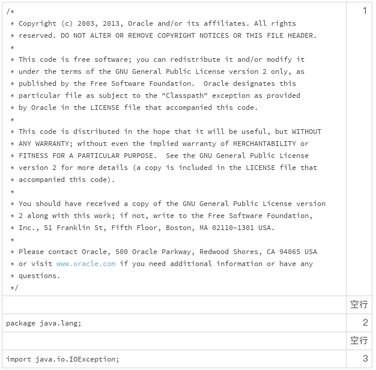
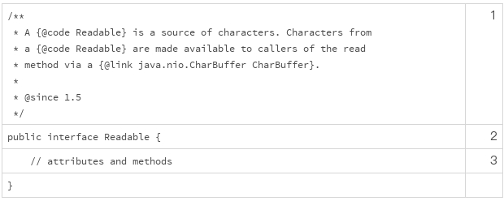
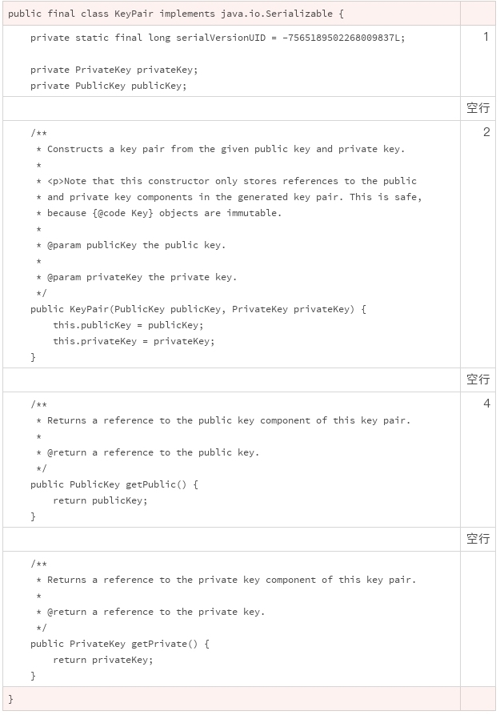
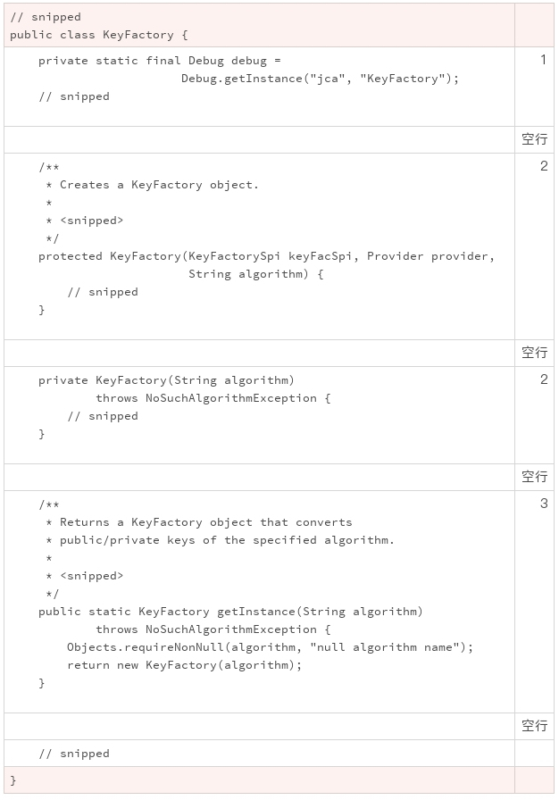
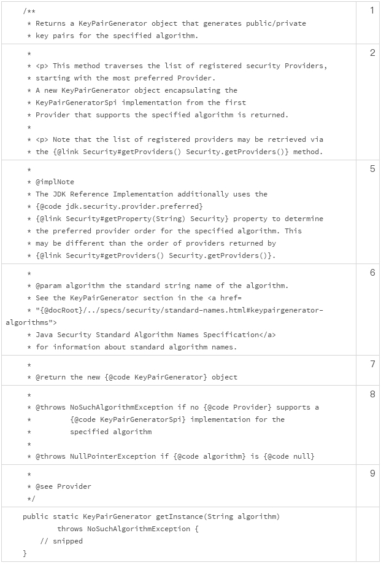
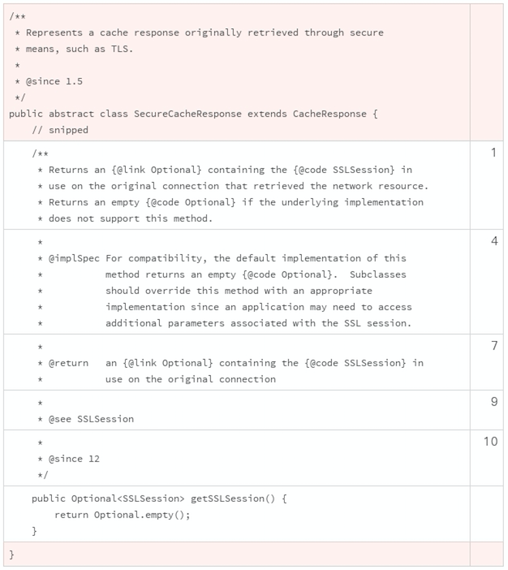
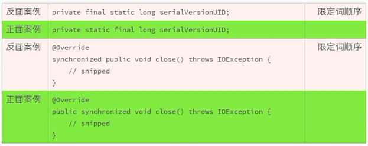
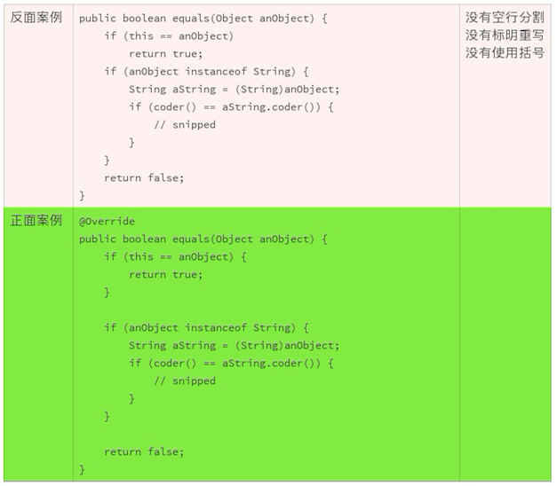

- 00 开篇词 你写的每一行代码，都是你的名片.md.html
- 01 从条件运算符说起，反思什么是好代码.md.html
- 02 把错误关在笼子里的五道关卡.md.html
- 03 优秀程序员的六个关键特质.md.html
- 04 代码规范的价值：复盘苹果公司的GoToFail漏洞.md.html
- 05 经验总结：如何给你的代码起好名字？.md.html
- 06 代码整理的关键逻辑和最佳案例.md.html
- 07 写好注释，真的是小菜一碟吗？.md.html
- 08 写好声明的“八项纪律”.md.html
- 09 怎么用好Java注解？.md.html
- 10 异常处理都有哪些陷阱？.md.html
- 11 组织好代码段，让人对它“一见钟情”.md.html
- 12丨组织好代码文件，要有“用户思维”.md.html
- 13 接口规范，是协作的合约.md.html
- 14 怎么写好用户指南？.md.html
- 15 编写规范代码的检查清单.md.html
- 16丨代码“规范”篇用户答疑.md.html
- 17 为什么需要经济的代码？.md.html
- 18丨思考框架：什么样的代码才是高效的代码？.md.html
- 19 怎么避免过度设计？.md.html
- 20 简单和直观，是永恒的解决方案.md.html
- 21 怎么设计一个简单又直观的接口？.md.html
- 22丨高效率，从超越线程同步开始！.md.html
- 23 怎么减少内存使用，减轻内存管理负担？.md.html
- 24 黑白灰，理解延迟分配的两面性.md.html
- 25 使用有序的代码，调动异步的事件.md.html
- 26 有哪些招惹麻烦的性能陷阱？.md.html
- 27 怎么编写可持续发展的代码？.md.html
- 28 怎么尽量“不写”代码？.md.html
- 29 编写经济代码的检查清单.md.html
- 30丨“代码经济篇”答疑汇总.md.html
- 31 为什么安全的代码这么重要？.md.html
- 32 如何评估代码的安全缺陷？.md.html
- 33 整数的运算有哪些安全威胁？.md.html
- 34 数组和集合，可变量的安全陷阱.md.html
- 35 怎么处理敏感信息？.md.html
- 36 继承有什么安全缺陷？.md.html
- 37 边界，信任的分水岭.md.html
- 38 对象序列化的危害有多大？.md.html
- 39 怎么控制好代码的权力？.md.html
- 40 规范，代码长治久安的基础.md.html
- 41 预案，代码的主动风险管理.md.html
- 42 纵深，代码安全的深度防御.md.html
- 43 编写安全代码的最佳实践清单.md.html
- 44 “代码安全篇”答疑汇总.md.html
- Q&A加餐丨关于代码质量，你关心的那些事儿.md.html
- 结束语 如何成为一个编程好手？.md.html
- 捐赠
11 组织好代码段，让人对它“一见钟情”
当我们看到一个事物的时候，它的轮廓首先进入视野，给了我们第一印象。如果第一印象没有吸引到我们，那我们就不会集中注意力去关注它，也不会想去认识它。
我觉得有个俗语非常好地概括了这个认知习惯。这个俗语就是“不起眼”，更通俗一点的说法是“放在人群里认不出来”。
不管我们愿不愿意，第一印象特别影响我们的判断和心情。我们看到美好的东西，自己也跟着高兴；看到乱糟糟的东西，自己也感觉乱糟糟的。
代码也是这样的。如果我们看到整齐、清爽的代码，我们就对它有好感，愿意阅读，也愿意改进。 如果代码一团糟，风格混乱，我们就特别想静静地走开，一行都不想看。
前面的几讲中，我们讨论了注释、声明、格式、注解等编码规范。现在，是时候把这些零散的知识放到一块儿了。这些规范组合在一起，就会让代码既有让人喜悦的轮廓，也有让人清爽的细节。
这一次，我们将使用大量的例子，从代码文件头部结构、对象结构、类的内部结构、方法的代码结构、限定词的使用以及空行的使用这六大维度，来说明到底该怎么组织一个源代码文件。
代码文件头部结构
一般来说，一个源代码文件的开始部分包含三项内容。 按照出现顺序，分别为：
版权和许可声明；
命名空间（package）；
外部依赖（import）。
下面就是一个例子。
- 在版权部分中，“2003, 2013”中的2003表示的是代码的诞生日期，2013表示的是代码的最近更改日期。需要注意的是，每次代码变更，都要更改代码的最近更改日期。
代码文件对象结构
紧随着源代码的头部，是对目标类的定义，这一部分包含三个部分。 按照出现顺序，分别为：
类的规范；
类的声明；
类的属性和方法。
这一部分中，我们需要注意的是，对于公共类，需要使用since标签，标明从哪一个版本开始定义了这个类。 这样的标明，方便我们对类进行版本管理，减少我们进行代码变更时的工作量。
- 比如在上面的例子中，如果需要修改Readable，当看到“since 1.5”的标签时，我们就不需要检查Java 1.4的代码了。
你也许会问，为什么Java 1.4不能使用Readable呢？since标签同样可以给你答案，因为Readable是从Java 1.5开始才有的接口。
这些问题虽然简单，但是如果没有使用since标签，答案就没有这么直观明显了。
类的内部代码结构
类的属性和方法，一般是一个代码文件的主要组成部分。类的结构，推荐的编码顺序依次为：
类的属性；
构造方法；
工厂方法；
其他方法。
我摘抄了一段JDK的代码，你看这样是不是更干净整洁？
- 上面的代码案例中没有用到工厂方法，我来讲一下这个。
类似于构造方法，工厂方法也是用来构造一个类的实例。不同的是，工厂方法有具体的返回值。它可以是静态方法，也可以是实例方法。
如果是实例方法，工厂方法还可以被子类重写。这是工厂方法和构造方法的另外一个重要的区别。由于工厂方法也扮演着构造类实例的功能，我们一般把它放在构造方法的后面，其他方法的前面。

方法的代码结构
讲完了类的内部代码结构，我们再来讲讲方法的代码结构。一般来说，一个方法需要包含三项内容：
方法的规范；
方法的声明；
方法的实现。
内部类的内部方法，可以没有第一部分。但对于公开类的公开方法，方法的规范一定不能缺失。 一个典型的规范，应该包含以下十个部分：
方法的简短介绍；
方法的详细介绍（可选项）；
规范的注意事项 (使用apiNote标签，可选项)；
实现方法的要求 (使用implSpec标签，可选项)；
实现的注意事项 (使用implNote标签，可选项)；
方法参数的描述；
返回值的描述；
抛出异常的描述：需要注意的是，抛出异常的描述部分，不仅要描述检查型异常，还要描述运行时异常；
参考接口索引（可选项）；
创始版本（可选项）。
下面的这个例子，也是来自JDK的源代码。你可以清晰地看到，这段代码中的规范是非常典型的。
- 如果方法的创始版本和它所属类的创始版本一致，方法的创始版本描述可以省略。 要不然，一定要加入方法的创始版本标签。
像下面这个例子，就添加了创始版本标签。

按顺序使用限定词
在声明一个类、方法或者方法属性时，为了更准确地描述和理解声明的适用场景，我们通常要使用修饰性的关键词。这些修饰性的关键词，我们通常称它们是修饰符或者限定词。 一个声明，可以使用多个限定词。
Java的语法中，限定词的使用顺序没有强制性规定。但是，限定词的使用顺序有一个约定俗成的规则。按照这个规则使用限定词，一般来说，我们最关切的修饰符最先进入我们的视野，和标识符最密切的位置最靠近标识符。使用一致性的顺序，我们就能更快速地理解一个声明。
限定词推荐使用顺序：
public/private/protected （访问控制限定词，制定访问权限）
abstract （抽象类或者抽象方法，具体实现由子类完成）
static （静态类、方法或者类属性）
final （定义不能被修改的类、方法或者类属性）
transient（定义不能被序列化的类属性）
volatile（定义使用主内存的变量）
default（声明缺省的方法）
synchronized（声明同步的方法）
native（声明本地的方法，也就是Java以外的语言实现的方法）
strictfp（声明使用精确浮点运算）

使用空行分割代码块
我们之前讲过怎么整理代码，一个重要的原则就是“给代码分块”，通过空格、缩进、空行实现这个目的。
再来回顾一下空行的作用，空行用于垂直分割，用于分开同级别的不同代码块。
我们可以使用空行分割如下的代码块：
版权和许可声明代码块；
命名空间代码块；
外部依赖代码块
类的代码块；
类的属性与方法之间；
类的方法之间；
方法实现的信息块之间。

小结
对于软件开发者来说，组织代码是一项基本技能，也是我们需要养成的好习惯。组织代码有许多不同的习惯和策略，我们要学会辨别这些策略中哪些是有效的，哪些是有害的。
怎么辨别呢？
和其他技能一样，最快的提升方法是仔细思考一下为什么我们要做出这样的选择，而不是其他的。知其然远远不够，还要知其所以然。
你可以试着看看你的项目，源代码是按照这种方式组织的吗？哪些部分采用了合理的组织方式，哪些部分还有改进的空间？哪些是值得分享的经验？欢迎你把想法分享在留言区，我们一起来学习。
一起来动手
下面的这段Java代码，我们已经很熟悉了。前面，我们对它做过很多方面的修改。这一次，我们把前面的修改集中起来。你试着去找到所有可以改进的地方，然后比较一下修改前和修改后的代码。你有什么感受？
欢迎你把优化的代码公布在讨论区，让我们一起来感受、来欣赏！
也欢迎点击“请朋友读”，把这篇文章分享给你的朋友或者同事，一起来体验修改代码的快感。
import java.util.HashMap;
import java.util.Map;
class Solution {
/**
* Given an array of integers, return indices of the two numbers
* such that they add up to a specific target.
*/
public int[] twoSum(int[] nums, int target) {
Map<Integer, Integer> map = new HashMap<>();
for (int i = 0; i < nums.length; i++) {
int complement = target - nums[i];
if (map.containsKey(complement)) {
return new int[] { map.get(complement), i };
}
map.put(nums[i], i);
}
throw new IllegalArgumentException("No two sum solution");
}
}
© 2019 - 2023 Liangliang Lee. Powered by gin and hexo-theme-book.